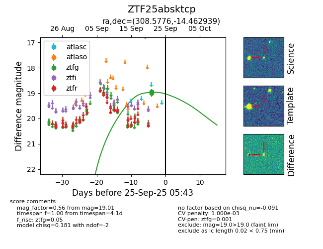
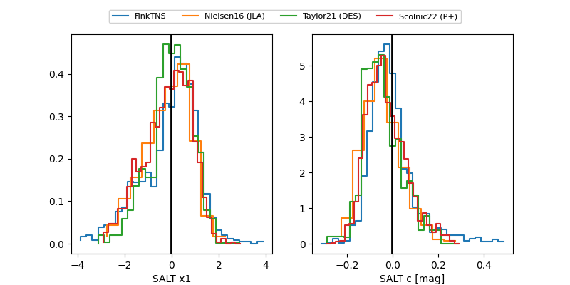

FINK: ZTF25absktcp
Lasair: ZTF25absktcp
ALeRCE: ZTF25absktcp
ZTF25absktcp (ztf,fink)
equatorial (ra, dec) = (308.5776,-14.46294)
galactic (l, b) = (30.9180,-29.19932)


last ztfg=19.01
3 ztfg detections